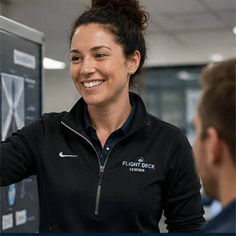
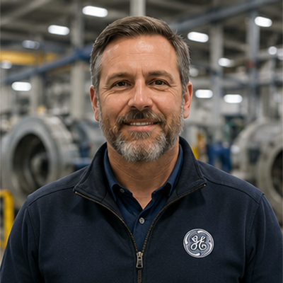

Five concepts
for the FLIGHT DECK.
Click through each one. They're not mockups — they're working ground in five distinct directions. Pick the one that fits how your people actually use the hub. Then we build it.
Where are you in your journey?
Pick the state that matches your team. We route you to the right tools. One decision unlocks the rest of the hub.
Why this works
- Resolves the "I haven't had the opportunity to attend any FLIGHT DECK training" pain — voiced by Non-Mfg People Leaders (N=4,900).
- One decision narrows everything else. Cuts the 4,326 weekly TopicHome hits that bounce without finding what they need.
- Function pills keep the page useful for the 28,000 Hourly Employees and the underserved non-MFG audience.
Skip the search. Just ask.
A conversational front door for the hub. Wingmate already gets unsolicited praise — this concept makes it the default entry point, not a buried feature.
Recent conversations
Why this works
- Wingmate is already the #1 outside-AH source in your data. We lean into your asset — we don't replace it.
- Removes navigation as the primary task. Solves "Frequency of visit drives ease of navigation" — the headline insight from your survey.
- Recent conversations rebuild context for the FD Leaders (N=400) who hit the hub daily/weekly — the priority audience.
Show me where to focus this week.
A leadership-first front page. Aggregate scores, ranked opportunities, peer comparison. The hub becomes a place to make a decision, not just a place to find a file.
| Team | Score | Δ 30d |
|---|---|---|
| Quality | 88 / 100 | +5 |
| Cell 7-A | 84 / 100 | +18 |
| Software Eng | 72 / 100 | +11 |
| HR Operations | 67 / 100 | +14 |
Why this works
- Speaks the Senior Leader (LF) language: "Say/Do on the KPIs · Frequency trumps quality of touch." Outcomes, not activity.
- Opportunity cards turn the hub into a recommender — directly mapped to your 6-step Hoshin plan (SEO, examples, journeys, search, notifications, Genba).
- Leaderboard creates positive peer pressure across real GE Aerospace sites — Wilmington, Saltillo, Avio Aero, Cheltenham.
Choose your starting point.
Routes built around how your people actually work. Seven personas reverse-engineered from your VOC data, mapped across 34,760 employees. FLIGHT DECK Leaders flagged as the priority audience.




Why this works
- Built on your 7 validated personas: FD Leaders (N=400, priority), Senior Leaders (285), Plant Leaders (~75), Mfg People Leaders (1,100), Hourly (28,000), Non-Mfg People Leaders (4,900), Non-Mfg ICs.
- Self-identification beats guessing — Hourly Employees who say "What is FLIGHT DECK?" don't know which folder to click.
- Each route is a curated Supermarket aisle (your Hoshin step 1) — not yet another nav tree.
Just tell me what to do next.
A short, linear flow that takes you to one next step. The lowest-effort path. For users who don't want a hub at all — they want an answer.
Why this works
- Direct answer to "Where do I start? My team is asked to deploy FD but unsure of where to start" — the Non-Mfg People Leader's #1 pain.
- Three small choices > one impossible search. Wraps the real top-pulled templates (Action Plan 59,594 · Mfg SW 11,265 · Cell Daily Mgmt Board 10,084).
- The output is a coaching plan, not a link. Hub becomes prescriptive — exactly what FD Leaders (N=400) say they need to scale.
We can ship any of these five.
Or — more likely — the one we ship combines two. Stage First + Wingmate First. Role First + Guided Path. The right answer is in this room, not in any single mock.
Five working directions, all built on your VOC discovery: 7 personas, 8.1% / 649 survey, 219,253 TopicHome views, your top-20 templates, and your 6-step Hoshin plan. We've read your work and built on it — that's the team you want building this.